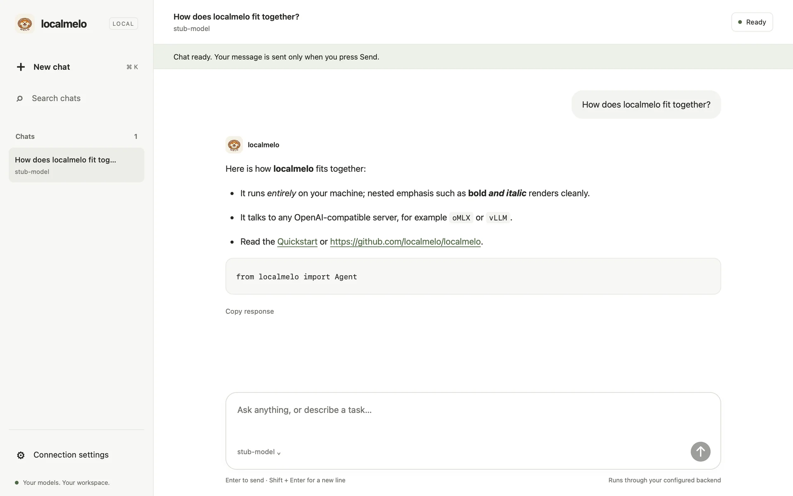

localmelo
A local personal agent that runs tasks with tools and memory on your own model server or a cloud API. It runs from the command line or as a small HTTP service.

melo --serve opens at http://127.0.0.1:8401/.Quick start
You need Python 3.11 or later, Git and uv, on macOS (developed and tested) or Linux (should work, untested). Windows is not supported. Install it with uv (or with pip):
git clone https://github.com/localmelo/localmelo.git
cd localmelo
uv sync --extra gateway
source .venv/bin/activate
Keep the directory name localmelo: the package is built
from it.
Start a model server, for example Ollama
with a model pulled by ollama pull qwen3:8b, and run a
task. The answer is printed on stdout.
melo --base-url http://127.0.0.1:11434/v1 --chat-model qwen3:8b "What is 6*7?"What you can do
Each card opens the matching reference page on GitHub.
melo: it shows the model's thinking, each tool call and the run's progress as they happen, shows the diff a file write will make before you approve it, asks before it runs a command or writes a file, and resumes a saved chat in the folder with melo -c or melo -r; /title, /undo, /usage, /memory and /copy name, undo, inspect and copy the conversation, and a whole chat can run in a reasoning and recall mode (--reasoning, --retriever and the recall options).
Tools and MCP
Use four built-in tools and the tools of local MCP servers: a gateway or console chat gets three, without shell_exec; each step offers the built-in tools, the ones the model has already called and the closest matches for the task, and runs only those; their children get a minimal environment plus tool_env, and a Python call runs in a child process that its time limit can stop.
Model servers
Connect to Ollama, oMLX, MLC LLM, vLLM or SGLang servers that you run, or to the OpenAI, Anthropic, Google Gemini or NVIDIA API.
Gateway and web workspace
Serve the agent over HTTP, with sessions that survive a restart, and use the web console's live page at http://127.0.0.1:8401/: the session list, a chat's turns with a work card for each tool call, the progress row, Stop and a level chip; the page talks only to /api.
Worker history
Run a worker from a brief file with a JSON result or event stream; save or import runs and inspect read-only history in the workspace or gateway API.
API v2
Read the web console's sessions, turns, stored events (a Server-Sent Events stream too), image blobs, submission lookups, tools, grants, memory and runs over /api, and create a session or start, retry, stop and approve its turns there; it is loopback-only and only grows.
Memory
Keep working memory, a history of tasks and steps, and long-term memory, saved to SQLite when you turn persistence on; compress reasoning modes keep short notes and recall them at start, attempt and step. Heuristic notes can retain some negative and Chinese statements, but extraction and source attribution can be wrong or incomplete. You can forget a task's memory or all of it from Python.
Embedding setup
Add the embedding model long-term memory needs: the first run or the setup wizard offers one the chat server already lists, with steps for Ollama, oMLX, vLLM, SGLang and MLC.
Python API Experimental
Run tasks from Python code: follow each step as an event, stop a run, approve tool calls, and keep the file tools inside one directory.
Memory retrieval
Compare the bm25, llm and embedding memory retrievers on labelled queries with melo-retrieve; the compress reasoning modes use the same retrievers in the loop, and auto picks one.
Scripts and benchmarks
Read one JSON line per run and a fixed exit code, so scripts can rely on the outcome, and choose how a reply's reasoning is sent back or kept on later turns (--reasoning legacy, drop, replay, compress or compress+replay).
Roadmap
The v0.1.0 milestone is due 2026-12-20.
On 2026-10-28 the queue landed Tool safety-1: no shell in direct runs (P13b, #110), Web console-1: live chat page (U3 PR 5a, #111), Terminal UI-1: show the model's reasoning (R2b, #115), Memory facts-1: reliable fact notes (T68, #114), Task scheduler-1: task store and priorities (S3a.1, #113), Memory facts-1b: digests say what the attempt did (#116), website sync (#118) and Task scheduler-2: task API and workers (S3a.2, #119).
Since #130 the queue landed Core loop-1b: request fitting, a fixed prefix and captured history, all opt-in (#131, #142 and #144); Task scheduler-3's park, recovery store and restart reconciliation (#135, #147 and #152); the worker contract's brief and JSON result (#143); gateway access tokens, the playground off by default and the API client guide (#136, #141 and #150); negative and Chinese notes (#137) and clearer digest labels (#149); opt-in streaming (#145 and #153); text attachments (#155); and the docs lane (#132, #133, #134, #140 and #146).
Attempt digests now prefer same-task digests and gate cross-task digests; general memories remain available.
In flight, landing in this order:
- macOS app-1: desktop app (A1) — review fixes in progress;
- Task scheduler-3: pause, park and restart recovery (S3b) — process capture and controlled Resume in review;
- Task scheduler-4:
melo-taskcommand (S3c) — S3c.1 in review; - Headless worker support-4: worker contract (#107 W2) — startup results in review, the inbox next;
- Terminal UI-2: shell commands, streaming and image attachments (U2c, U4) — text attachments and streaming landed; shell commands next;
- Memory facts-2: Chinese and negative facts — slice 2 (updates and supersession) in review;
- Memory recall-2: same-task recall gating (#148) — in progress, opt-in;
- Docs-1: the next batch of bilingual pages (#117).
Next, in order:
- Headless worker support-2: dogfood trial (#107 W1);
- Headless worker support-5: task API workers and Claude Code (#107 W3-W4);
- Later: further scheduler phases, the sleep pipeline (#14) and the rest of Track 6 (#29).
The phases, their issues, the full queue and dated changes are on the roadmap and updates page.
Security
Tools run with your account's permissions, and there is no
sandbox. The model can run shell commands and Python code,
and read or write any file you can. New memory files are created
readable only by you (mode 0600). The gateway requires a bearer token or browser session and refuses non-loopback binds. Run melo --gateway-login in a terminal for a one-use link. A token holder can act as you; same-user processes are not isolated, and browser cookies are not isolated by localhost port.
Read the security policy and what the checks do.